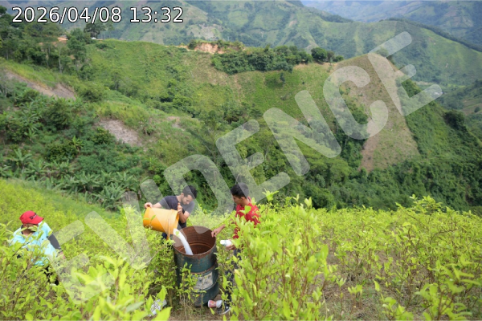
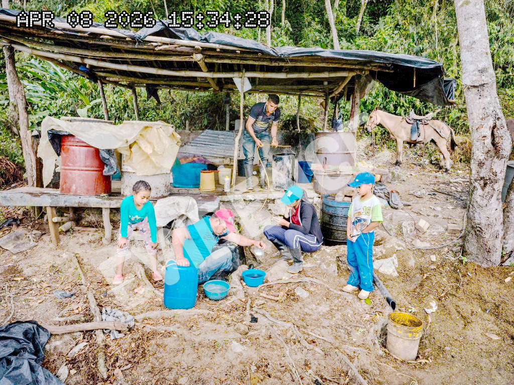

Republic of San Meridian
Policia Nacional - Special Operations Command
INTELLIGENCE SUMMARY: PROJECT 'WHITE HARVEST'
| Report ID: | SM-PN-SOC-2026-441-A |
| Report Date: | 18 May 2026 |
| Subject: | Investigation of FMC Narcotics Production Facility #4 |
| Lead Operative: | Detective XXXXXXXXXXXXXXX (Command ID: 9942) |
| Duration: | 28 Days (Ongoing) |
| Priority: | CRITICAL / TOP SECRET |
Undercover operative XXXXXXXXXXXXXXX has successfully infiltrated the Free Meridian Cartel (FMC) logistical chain in the northern territories. Despite the extreme risks, the operative established their cover within 26 days, gaining access to a primary narcotics processing facility located in a remote agricultural sector.
During the reporting period, the operative utilized localized body camera equipment and covert surveillance techniques to recover stored candid photographs and physical data from the site. The following visual assets were successfully exfiltrated:






Data indicates a **350% increase** in cocaine refinement throughput over the last month. The FMC is moving from small-scale smuggling to industrial-level production. Most alarmingly, signals intelligence and informant chatter suggest the Cartel is preparing to expand operations significantly up **Montana Jacques**.
A new, much larger facility is reportedly under construction in the mountain range to exploit the high altitudes for clandestine ventilation systems.
The operative recovered a physical copy of an internal FMC publication circulating among low-to-mid level members. This document contains direct incitement to violence and tactical preparations.
Attached Annex:
Recovered FMC motivational manifesto: see also reference EVIDENCE-FMC-03